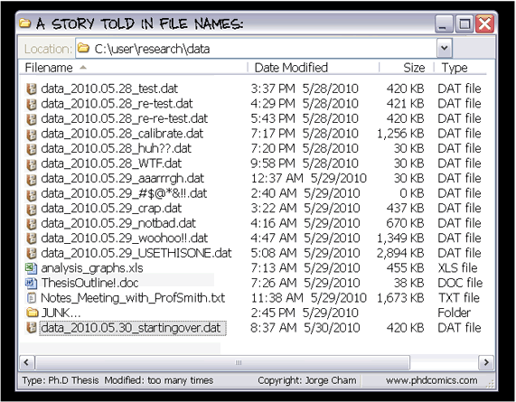
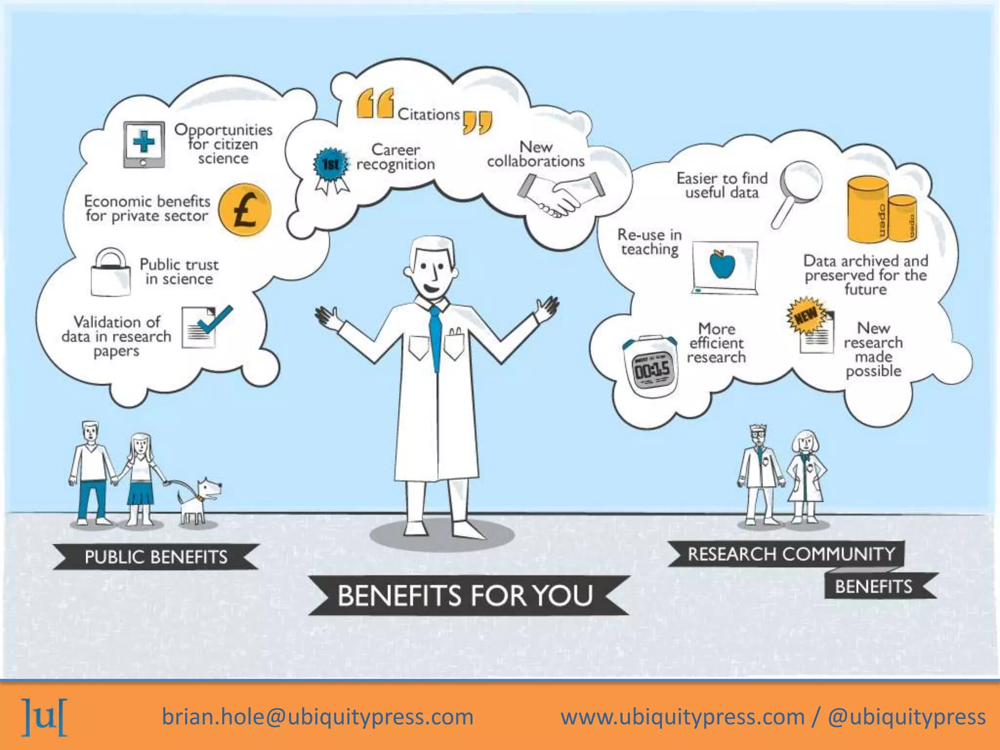

Welcome
We welcome you to the FAIR research data management tutorial. This interactive course is centered around the FAIR principles and their practical application in managing your research data efficiently. FAIR is an acronym and encompasses:
- Findable
- Accessible
- Interoperable
- Reusable
The FAIR data principles state that it should be easy to find research data, they should contain information about how to gain access to them, they should be compatible with other data, and possible to reuse.1 For instance, ensuring your data is well-organized and documented can make it easier for humans and machines to find and understand it and enable better reuse of the data. If the concept of the FAIR principles is new to you, take a minute to check this comprehensive overview of the GO FAIR initiative before starting this tutorial.
Please note that FAIR and open are not synonymous. Not all FAIR data is necessarily open; some datasets fulfill the FAIR principles but are not considered open data. Economic or legal constraints (e.g. patents) may prevent the dataset from being publicly available. For FAIR data, the conditions and ways to access the data must be clearly defined.2 On the other hand, there are numerous datasets that are publicly available but do not comply with the FAIR principles, as you will most likely see in the course of this tutorial.
To learn more about the importance of good data management, watch this humorous video (by the NYU Health Sciences Library, 2013) on the common challenges researchers face with data sharing and management. It highlights the importance of good data management practices for ensuring data can be easily found, understood, and used by others.
Who is this tutorial for?
This tutorial was designed for early career researchers who are either about to start or want to manage their empirical research data more effectively. Although it was developed with this target group in mind, it can most probably benefit many other researchers who are also consolidating their data management skills.
What is the purpose of this tutorial?
Appreciation of adequate data management usually occurs when looking into someone else’s data folder:

However, structures like this evolve over time and especially in the beginning of a project it is hard to imagine ending up with such a chaotic folder. Yet, more advanced participants can potentially think of an example where a folder tended to look similar, only that you are mastering your structures better than others.
This tutorial will artificially advance your experience of navigating other researcher’s data, thereby hoping to point out good and bad practices that shall soon inspire your own data management. It also highlights the importance of planing the management of your data very early in the course of the project to benefit most from it: Having well-organized and documented data will not only increase their value and accessibility for the wider research community but also for your future self, when going back into your data folder e.g., for a revision after a year.
Benefits
We do know that the trend towards transparent and reproducible research is increasing, and more and more journals require researchers to publish the data on which their research results are based. The effort of publishing these data is negligible if you have a good data management strategy in place right from the beginning. Publishing FAIR data, i.e., data that are of actual use to others, also comes with numerous scientific benefits:
- Data can be reused and cited in a timely manner. Citation of the data by other researchers increases visibility and can strengthen the reputation of your research.
- New scientific collaborations may arise through data published according to FAIR, i.e., in reusable format. Collecting data is a time consuming business, so other researchers might as well benefit from already existing data (collected on public money), and you receive credit for producing the data.
- Publishing data on which research results are based (in addition to the ‘traditional’ scientific articles) will support the credibility, reproducibility, and validity of the results. This increases public trust in science.
Additional benefits are displayed in this graphic.

How to?
Setting out this tutorial, we quickly agreed that data management is best understood through learning by doing in a realistic setting: Imagine finding an article relevant to your research in a repository. Alongside the article, you find the associated data that you want to inspect further. Starting from this perspective, we look at publication aspects first and then move on to data documentation and organization.
The whole tutorial evolves around four published articles and their datasets:
- Example 1: https://edmond.mpg.de/dataset.xhtml?persistentId=doi:10.17617/3.1STIJV
- Example 2: https://data.ub.uni-muenchen.de/288/
- Example 3: https://osf.io/6p9bf/
- Example 4: https://zenodo.org/records/10650333
It is your job to investigate one of these datasets with a special focus on publication, documentation and data organization aspects. We will conclude with an introduction to data management plans, a helpful planning tool to comply with the FAIR principles. In this section, we will also introduce important aspects of data storage.
The topics are accompanied by distinct boxes that are color-coded for their content:
Only open the box if you want to see the solution!
We recommend that you look at the hands-on exercises first and see whether you already know their solutions. If things are unclear, you may return to the text anytime, but be aware that it is not necessary (and time will probably not permit) to read every paragraph and every box very carefully. The materials will, however, remain available, so you can always go back and reread more carefully!
Like this tutorial? Be sure to give the repository a star and follow us on GitHub!
If you have questions for the author of this tutorial, please take a look at the About page.